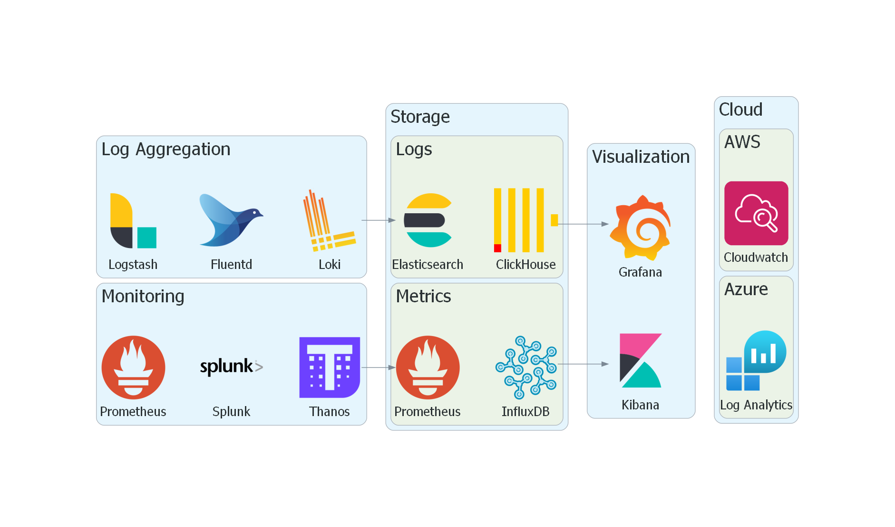

The Curated Data Platform
Last Revision: June 2021
Kevin Feasel (@feaselkl)http://CSmore.info/on/cdp
Who Am I? What Am I Doing Here?


Which data platform is right for me?
The website DB-Engines keeps track of over 350 different data platform technologies, ranging from relational databases to data warehouses, document databases, key-value stores, search engines, time series, graph databases, and more.
Motivation
My goals in this talk:
- Walk you through several scenarios.
- Discuss when different data storage types make sense.
- Cover relevant cloud options in AWS and Azure.
- Describe technologies for integrating everything together.
A Brief Warning
This talk covers data platform technologies as a broad swath and does not spend much time covering the merits of individual products with respect to one another.
Often times, "the platform you have" is a perfectly reasonable answer for "Which platform should I choose?" Understanding how (and when!) to use these platforms is my goal for today.
Agenda
- An Overview
- Tracking Finances
- Product Catalog
- Busy Website
- Data Analytics
- IoT, Real-Time, and Mobile
- Logging and Metrics
- Tying it All Together
Our Scenario
We work for Catallaxy Widgets, a major retailer of fine widgets and widget accessories. Our holdings include hundreds of stores around the world, as well as a major website.
Our IT team is looking to modernize several key systems in the organization and asked for our guidance.
The Current System

Pain Points
Our current system has worked, but we're experiencing some pain points:
- Finances in Excel spreadsheets is clunky.
- Customers experience slowness searching through our vast product catalog.
- Customers experience slowness navigating through our website and making orders.
- No support for the data science team.
- Log review is painful for IT.
The Upshot
For each of these problem domains, we will look at data platform technologies well-suited for the domain.
Not all of these technologies are necessary and we can certainly make substitutions, but these are solid choices for the job.
Agenda
- An Overview
- Tracking Finances
- Product Catalog
- Busy Website
- Data Analytics
- IoT, Real-Time, and Mobile
- Logging and Metrics
- Tying it All Together
Key Requirements
- Data MUST be correct. Eventual consistency and even a few missed records won't work for us.
- Systems should be easy for non-IT staff to access, ideally within Excel.
- It's okay for some reports to update nightly rather than real-time. We also need a real-time app AP and AR can use for their day-to-day work.
- Performance is less important than correctness, but still a factor.
Key Technologies
- Relational database (OLTP -- On-Line Transactional Processing) for storing financial data.
- Relational database (OLAP -- On-Line Analytical Processing) for connectivity to Excel and reviewing results.
Why OLTP?
- Non-distributed, relational database because the data must be correct for everybody, and ACID compliance helps us considerably.
- Performance will generally be good, though analysts far from the data center may need to deal with slower queries.
Key Players: OLTP

Why OLAP?
- Specifically, the Kimball model for warehousing.
- The data must be correct but may be delayed. We can use an ETL process to populate the warehouse.
- Data marts may be distributed across the globe to meet the performance needs of analysts, along with a central data warehouse to store the full set of data.
- Excel tools like Power Query are designed to work with Kimball-style warehouses.
Key Players: OLAP

OLTP + OLAP
Relational databases can serve as either OLTP or OLAP--these are database designs rather than distinct technologies.
There are also technologies dedicated to extending beyond relational OLAP, such as SQL Server Analysis Services and Oracle Essbase.
Reference Architecture

{kind=link}
Agenda
- An Overview
- Tracking Finances
- Product Catalog
- Busy Website
- Data Analytics
- IoT, Real-Time, and Mobile
- Logging and Metrics
- Tying it All Together
Key Requirements
- Performance is critical. As a global e-commerce company, we need fast response times across the globe.
- Consistency is not critical. Product data can be out of date or show different results between regions for a minute or two.
- We still want a single source of truth for product data, including quantity on hand, price, etc.
Key Technologies
- Document database for "republishing" OLTP data and maximizing performance.
- (Optional) Relational database (OLTP) to act as the single source of truth.
What is a Document DB?
- Key-value store
- The value is a complex document, often JSON (or JSON-like)
- The value may be nested:
ProducthasImages,PriceChanges, andStoreAvailabilityas well as attributes likePrice,Title, andBrand - Data retrieval is typically one record at a time, but allows for scans of data
Key Players: Document DBs

Is OLTP Necessary Here?
Short answer: no.
Long answer: an OLTP database may be a good choice for a busy product catalog, as it gives you a correct source system and it allows you to "true up" the document database(s).
Reference Architecture

Agenda
- An Overview
- Tracking Finances
- Product Catalog
- Busy Website
- Data Analytics
- IoT, Real-Time, and Mobile
- Logging and Metrics
- Tying it All Together
Key Requirements
- Performance is critical. As a global e-commerce company, we need fast response times across the globe.
- Many of the site assets are static, but there are several dynamic sections: shopping carts, order and invoice history, etc.
- Consistency is critical for some things (e.g., orders) but less so for others (e.g., product description, order history).
Key Technologies
- In-memory key-value caching for fast lookups.
- Simple storage for static content.
- Relational database (OLTP) to act as the single source of truth.
- (Optional) Document database for "republishing" OLTP data and maximizing performance.
Key Players: Websites

A Note on Shopping Carts
I'd recommend using an OLTP system for the shopping cart unless your company is enormous like Amazon.
If you do get to that point, a key-value store or document database can work well for the shopping cart, but be sure to have post-order mechanisms to ensure that products are available, prices were correct, the method of billing was successful, etc. Use message brokers to split apart these systems.
Reference Architecture

Agenda
- An Overview
- Tracking Finances
- Product Catalog
- Busy Website
- Data Analytics
- IoT, Real-Time, and Mobile
- Logging and Metrics
- Tying it All Together
Key Requirements
- Need to collect more data than is available in relational databases or even data warehouses.
- Need to collect "multi-structured" data like text files, as well as "unstructured" data like audio and video clips.
- Need to store a comprehensive history of data changes over time.
Key Technologies
- Apache Hadoop
- Apache Spark
- Data Lake storage
- Distributed quasi-relational database (OLAP)
- Graph databases
Apache Hadoop
Hadoop is a massive, distributed, batch processing system. Hadoop itself has three key components: the Hadoop Distributed File System (HDFS), the MapReduce library, and the resource allocation engine Yet Another Resource Negotiator (YARN).
The MapReduce library has fallen out of vogue along with pure Hadoop clusters, but the Hadoop ecosystem is thriving, especially Apache Spark.
Hadoop Ecosystem

Key Players: Hadoop

Apache Spark
Spark provides in-memory cluster computing, avoiding MapReduce's reliance on heavy I/O use.
Spark ties into several major cloud technologies, including Databricks, HDInsight / ElasticMapReduce, and Azure Data Factory / AWS Glue.
The Data Lake
HDFS opened up the possibility of massive, distributed storage of data, including multi-structured and unstructured data, which typically would not fit well in a classic data warehouse.
The data lake provides a central location for historical storage of a broad array of company data for the purpose of data science and machine learning activities.
The Data Lakehouse
Databricks has coined the term Lakehouse to represent the combination of data warehouse and data lake in one managed area.
The Data Lakehouse

Key Players: Modern DW

Graph Databases
Graph databases have a niche in the analytics space. Graph databases combine nodes (which represent entities) and edges (which represent connections between entities).
Graph Databases' Wheelhouse
- Path calculation (especially with weights, such as distance between cities)
- Fraud detection via link analysis: observe the links between known fraudulent entities and non-marked entities.
- Modeling fluid relationships between entities.
- Laying out network maps and other complex topologies.
The Problem with Graph Databases
The biggest problem with graph databases is that you can do the same things with relational databases, but with only one concept (the relation) versus two (nodes and edges).
The second-biggest problem with graph databases is that there is no common graph language like SQL or common implementation specs between products.
Key Players: Graph Databases

Reference Architecture
Reference Architecture

Reference Architecture

Agenda
- An Overview
- Tracking Finances
- Product Catalog
- Busy Website
- Data Analytics
- IoT, Real-Time, and Mobile
- Logging and Metrics
- Tying it All Together
Key Requirements
- Asynchronous message passing: devices push notifications and let services respond.
- Separate producers of messages from consumers of messages.
- Handle large (potentially very large) numbers of messages.
Key Technologies
- Message broker
- Stream processing
- Long-term storage over HDFS
- Document or Relational DB for fast data access
Message Brokers
Message brokers receive messages from producers and send messages to consumers. They provide a logical disconnect between the two.

Stream Processing
Stream processing handles messages one at a time (e.g., Kafka Streams, Flink) or in microbatches (Spark Streaming).
The Lambda Architecture


Key Players: Lambda

Reference Architecture

Reference Architecture

Agenda
- An Overview
- Tracking Finances
- Product Catalog
- Busy Website
- Data Analytics
- IoT, Real-Time, and Mobile
- Logging and Metrics
- Tying it All Together
Key Requirements
- Need a central source for logging across multiple services.
- Sometimes logs will follow a specific format, but no guarantee all records have the same shape.
- Queries are often "What happened at this time?" or "What errors do we see?"
Key Technologies
- The ELK Stack as a pattern
- Log storage: Elasticsearch
- Log shipping and event handling: Logstash
- Log querying and visualization: Kibana
- Standalone logging services
Roll Your Own or Purchase?
There are full-service logging solutions, such as Splunk, Datadog, Loggly, and SumoLogic. These products perform quite well and tend to be accessible for developers and administrators. The downside is that they tend to be quite expensive.
On the other side, open source products exist as well and can be quite powerful when used correctly, but the learning curve tends to be much higher.
Key Players: Logging
Reference Architecture

Agenda
- An Overview
- Tracking Finances
- Product Catalog
- Busy Website
- Data Analytics
- IoT, Real-Time, and Mobile
- Logging and Metrics
- Tying it All Together
Data on the Move
As soon as you have two data platform systems, you introduce the need to combine data.
There are three major approaches to data movement: ETL, ELT, and Data Virtualization.
ETL to ELT
For a long time, the normal pattern for data movement was Extract-Transform-Load (ETL). With the massive increase in data sizes, we have seen a move toward Extract-Load-Transform (ELT).
ETL to ELT: the Difference
ETL modifies data during the movement process: Extract data from a system, Transform it in the mover, and then Load the resulting data into your destination.
By contrast, with ELT, we Extract data from a system, Load it into a staging area on the destination, and Transform the data into its final form using the destination's compute resources.
Key Players: ETL/ELT

Data Virtualization
In addition to moving data from system to system, we can virtualize data, making it appear to move while remaining in its current location. Virtualization tools are commonly third-party products which sit on top of several data platform technologies and offer a "single pane of glass" view of databases. Functionality typically includes the ability to join between sources.
The downside to virtualization is that performance typically suffers with larger sets of data.
Key Players: Data Virtualization
- Actifio
- Denodo
- IBM Cloud Pak
- Informatica PowerCenter
- Oracle Data Service Integrator
- Starburst Presto
PolyBase
SQL Server 2019 extends a Microsoft technology called PolyBase, which allows you to virtualize data from a number of different data platform technologies, including Hadoop, Azure Blob Storage, SQL Server, Oracle, MongoDB, Cosmos DB, Spark, DB/2, Excel, and more.
For more, go to https://csmore.info/on/polybase.
PolyBase and ELT
One difference between PolyBase and other data virtualization products is that PolyBase enables ELT into SQL Server. You can create an external table from a remote data source and use that to land data into SQL Server.
Wrapping Up
This has been a look at the data platform space as it stands. This is a fast-changing field with interesting competitors entering and leaving the market regularly.
Wrapping Up
To learn more, go here:
https://CSmore.info/on/cdp
And for help, contact me:
feasel@catallaxyservices.com | @feaselkl
Catallaxy Services consulting:
https://CSmore.info/on/contact